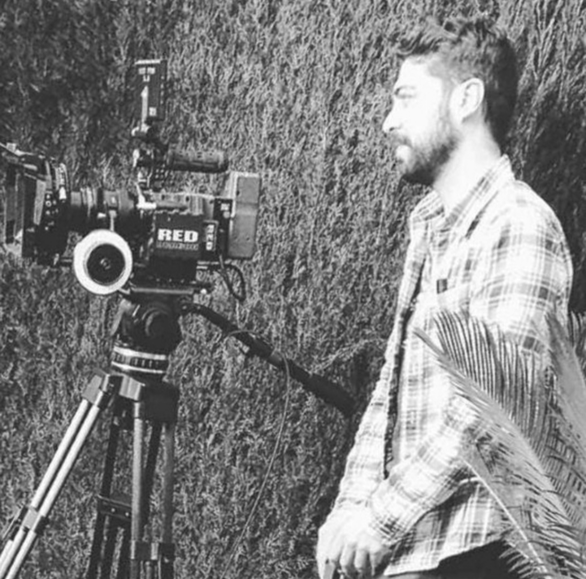

Carlos Ramos

Who I Am
Filmmaker - video editor with 9 years of experience in
directing advertising and audiovisual projects for TV and
social media. Specialized in storytelling, scripts,
storyboards, and motion graphics. Expert in producing
creative content with advanced skills in Adobe Creative
Education
- Bachelor of Audiovisual Communications Institution:
UCH CEU University.
- Master degree of Film Director
Institution: ESCAC.
- EPI Program for Internationals
Institution: University of South Carolina
Work Experience
Content Creator and Social Media Marketing
Transformation medical center (Columbia,SC) 2024
- Creation and management of visual and written
content for social media platforms, including
Instagram and Facebook, resulting in a increase in
interaction.
- Development and implementation of digital
marketing strategies .
- Collaboration with the plastic surgery team to create
educational and persuasive content highlighting the
company's services and expertise.
- Film Director/Video Editor/Videographer
Bsv Produccion(Valencia, Spain)May 2014 to November 2022
- Filmed and edited and polished a wide variety of
audiovisual projects, including commercials tv,
promotional videos, and corporate content.
- As the leader of my lead group, I collaborated closely
with creative directors and clients to understand
their visions and requirements, ensuring that the
edited material reflected their creative intentions.
- Utilized specialized tools and software such as Adobe
Premiere Pro, After Effects and DaVinci Resolve for
precise editing, visual effects, and color corrections.
- Applied creativity in selecting and editing music,
sound effects, and animated graphics to enhance the
narrative and visual impact of projects.
Skills
- Adobe Creative Cloud: ⭐️⭐️⭐️⭐️⭐️
- Leadership: ⭐️⭐️⭐️⭐️⭐️
- Team Work: ⭐️⭐️⭐️⭐️⭐️
- Lighting Knowledge: ⭐️⭐️⭐️⭐️
- Videographer: ⭐️⭐️⭐️⭐️⭐️
Awards and Certifications
- Proyecta Award Best Commercial (Valencia 2017)
- Social Media Marketing
Institution: Meta
- Motion Graphics
Institution: Jorge Mochon Agency
- Cinematographer
Institution: Mastermedia
Other
My Hobbies
Contact me